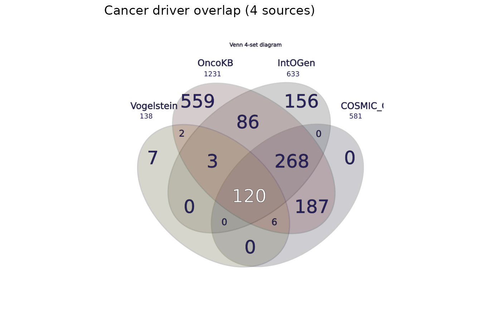

Returns a list of ggplot2 layers that draw `data` (a [`RegionResult-class`]) as a rasterized Venn diagram on a unit-square coordinate system, ready to compose with other ggplot2 elements (titles, themes, additional annotations).
Usage
geom_venn(
mapping = NULL,
data = NULL,
stat = "identity",
position = "identity",
...,
width_px = .GEOM_VENN_DEFAULT_WIDTH
)Arguments
- mapping
Accepted for ggplot2 layer-signature consistency. Currently ignored (the Venn diagram is rendered from `data`, not from aesthetic mappings). Reserved for a future Stat-based extension.
- data
A [`RegionResult-class`] (required). The Venn diagram to embed.
- stat
Accepted for signature consistency; currently ignored.
- position
Accepted for signature consistency; currently ignored.
- ...
Forwarded to `ggplot2::annotation_custom()` (e.g. `xmin`, `xmax`, `ymin`, `ymax` to position the venn on a non-unit coordinate system).
- width_px
Raster width in pixels (default 800). Larger values give sharper output at the cost of memory.
Value
A list of ggplot2 layers: an `annotation_custom` carrying the rasterized Venn, a `geom_blank` establishing `[0, 1] x [0, 1]` limits, and a `coord_fixed(ratio = 1)` so the diagram remains square. Note that `coord_fixed` will override any coordinate system the user has already added; add `geom_venn()` before other coord layers to avoid a warning.
Details
This is a NEW capability – the Python package has no equivalent. It uses the same rasterization pipeline as [to_pdf_report()]: render the SVG via [render_venn_svg()], rasterize via `rsvg::rsvg_nativeraster()`, and wrap as a `grid::rasterGrob()` inside `ggplot2::annotation_custom()`.
Examples
ds <- methods::new("VennDataset",
set_names = c("A", "B"),
items = list(A = c("x", "y"), B = c("y", "z")),
item_order = c("x", "y", "z"),
universe_size = 10L, source_path = NULL, format = "csv")
result <- analyze(ds)
if (getRversion() >= "4.6") {
p <- ggplot2::ggplot() + geom_venn(data = result) + ggplot2::theme_void()
inherits(p, "ggplot")
}
#> [1] TRUE
# \donttest{
if (getRversion() >= "4.6") {
result <- analyze(load_sample("dataset_real_cancer_drivers_4"))
library(ggplot2)
ggplot() +
geom_venn(data = result) +
theme_void() +
ggtitle("Cancer driver overlap (4 sources)")
}

# }